Mega Drive - Os acessórios do Genesis
 :::. Por Gigacom - Tá certo que o Mega Drive é lindão, e os primeiros modelos feitos pela Tec Toy tão ótimos tambem, porém a maior parte dos colecionadores tem uma quedinha pelo Genesis americano, e todos aqueles itens meio exclusivos do povo de lá. Aqui vou mostrar para vocês os acessórios oficiais do Sega Genesis que pouco vimos por aqui.
:::. Por Gigacom - Tá certo que o Mega Drive é lindão, e os primeiros modelos feitos pela Tec Toy tão ótimos tambem, porém a maior parte dos colecionadores tem uma quedinha pelo Genesis americano, e todos aqueles itens meio exclusivos do povo de lá. Aqui vou mostrar para vocês os acessórios oficiais do Sega Genesis que pouco vimos por aqui.
_______________________________________________________________________________
Controle de 3 botões
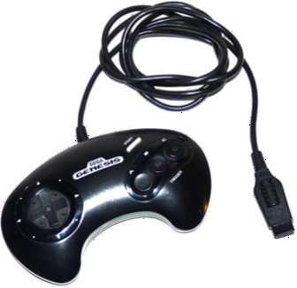Precisa falar? Mas é claro! Essa é a versão americana do controle mais bem bolado de toda a historia. É bonito, tem um visual bacana, o tamanho certo, lembra um boomerang e é duro que uma beleza (dava pra rachar o côco do irmão mais novo que ficava enchendo o saco na hora que você tava jogando). A única diferença desse controle para os da Tec Toy são as inscrições mesmo, nesse há apenas o logo do Genesis no meio e a legenda dos botões, enquanto que no controle da TT havia mais algumas coisas. De resto, é tudo igual.
Controle de 6 botões
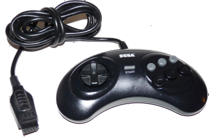 O controle versão Street Fighter do Genesis. Foi lançado com o intuito de ser usado no Street Fighter, e se aparecesse mais algum jogo do tipo, poderia ser usado tambem. Era um upgrade, e da melhor categoria. Esse controle é bem menor que o outro de 3 botões, o direcional é bem macio, e o controle em si é o melhor para se jogar games 2D e de luta. A TT tambem produziu uma versão igualzinha ao do Genesis.
Arcade Power Stick
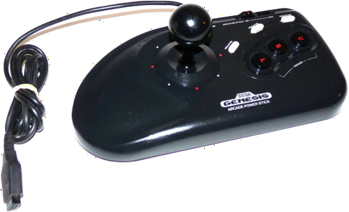 Quando vi um desses pela primeira vez, soltei um "caraaaaaaaaio mano" na hora. Já tive um e posso falar que é um dos melhores controles do Mega Drive. Ele é bem pesado, pois possui uma baita chapa de metal no fundo, tem tambem uma resistência excelente e função turbo com regulagem de intensidade e tambem com opção de ativação para cada botão. Jogar Streets of Rage nele é uma experiência única!
6-Button Arcade Power Stick
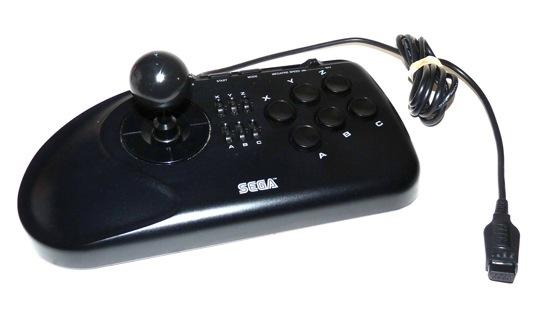 Versão 6 botões do Arcade Power Stick. É tão pesado quanto o antecessor, e possui as mesmissimas funções, claro que agora para cada um dos seus 6 botões. Pode parecer estranho mas não é dos melhores para jogos de luta (o direcional, no fundo, tem a mesma estrutura de um joystick, e não o de um arcade) mas mesmo assim quebra um galho daqueles na hora de dar porrada no Mortal Kombat.
Wireless 6 button controllers
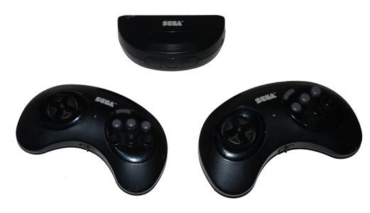 Existem os itens raros, e os que são praticamente impossiveis de se encontrar. Esses controles se encaixam na segunda categoria. Caros, lindos e únicos, essas são as melhores caracteristicas desses controles. Vinham assim como na foto, em pares e com o sensor. Funcionavam à pilha, com respostas rapidas e perfeitas. Não era preciso ficar exatamente em frente ao receptor para jogar, o ângulo de recepção era bastante grande. É complicado achar um desses hoje pelo simples fato de que, quem possui, não vende. Mas na época vendeu muito bem, apesar do preço salgado que nem bacalhau...
Flight Stick
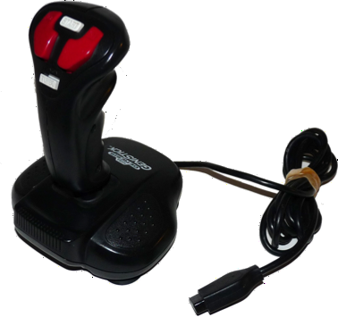Alguém inventou esse controle tipo manche, e o resto das empresas do mundo sairam copiando. É igual à qualquer controle do mesmo tipo de qualquer outro video game, claro que com a qualidade SEGA. Nem é preciso falar que jogar After Burner 2 com esse joystick é pra lá de bom, mas ele tambem não peca quando o assunto muda para jogos como Sonic, Phelios, Truxton... mas é imprestavél para jogos como Streets of Rage e de luta.
Esse joystick tambem é meio raro de se encontrar... mas não tanto quanto o de 6 botões wireless.
Control Pad Extension Cord
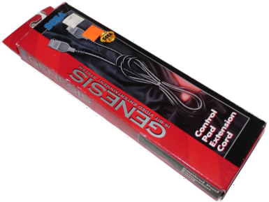 Cansado de ver o seu Mega Drive cair toda vez que sua mãe passa na frente da TV? Aqui está a solução! Com esse incrivel extensor, sua mãe nunca mais irá tropeçar no cabo do seu controle fazendo seu Mega inevitavelmente beijar o chão, agora quem irá beijar o chão é a sua mãe!
Activator
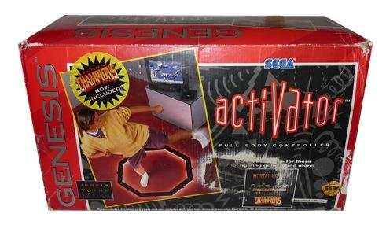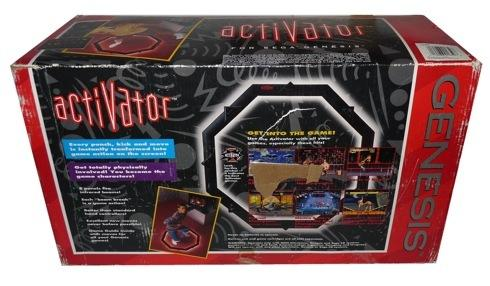
A idéia era boa. Que tal jogar Mortal Kombat dando chutes e socos no ar enquanto o Scorpion te imita dando o maior pau no Goro? Isso é legal, o problema é que não funciona... o Activator era formado por várias peças com sensores de movimento. Cada parte do Activator acionava um comando quando alguma coisa passava por cima dele.
No fim das contas foi um completo fracasso... ninguem conseguia ficar mais de 3 minutos em pé tentando fazer o Sonic andar e pular ao mesmo tempo. Dar um hadouken então... só em sonho mesmo.
Na minha opnião, o Activator é uma verdadeira porcaria. Caro, ruim, um trambolho lascado e o pior: não funciona. Se for pegar um desses, faça por conta e risco (ou burrice mesmo, sei lá).
Batter Up
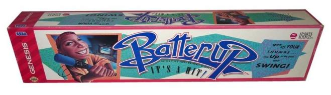
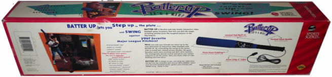
Taí um controle interessante, e que funcionava muito bem. Nem precisa falar que era pra ser usado com jogos de beiseball né? Com sensor de movimento, botões, direcional e um cabo enorme, dava pra jogar de boa. O ruim era quando o moleque empolgava e alguem aparecia na frente do garoto bem na hora de rebater a bola... Ah sim, a empunhadura era muito boa tambem, mas por não ter nenhuma alça de segurança que prendesse o taco no braço do jogador, o jogador poderia arremessar o taco à léguas de distância ou em direção à TV.
Mega Mouse
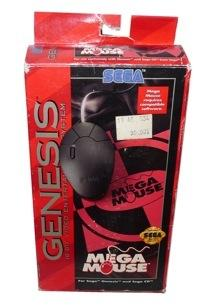É amiguinhos, o Genesis tambem teve seu proprio ratinho de computador. Mas ao contrário do que a maioria pode pensar, ele não apareceu para ser usado com o Mega Net ou outros aparelhos como o Telebradesco. O objetivo deste era simplesmente de servir como mouse para joguinhos do estilo Mario Paint, como o Art Alive e Wacky Worlds.
Pouquissisisisisiiiiiiiiimos jogos fizeram uso desse acessório, como o Dungeons & Dragons: Eye of the Beholder para Sega CD.
Dentro da caixinha, vinha um mouse pad, e os três botões do mouse tinham as mesmas funções dos botões A, B e C de um controle comum.
Justifier
Tambem conhecida como a pistola 3Oitão do Mega Drive, a Justifier (tambem chamada de Justice Fire) era um produto oficial e licensiado pela Sega para uso no Genesis e Sega CD. Tem cores vibrantes justamente para diferencia-la de uma arma e caracterizá-la como um brinquedo.
Funciona apenas em TVs CRT (as de tubo), tem uma versão para o Super Nintendo que é tão igual quanto, e nunca foi lançada no mercado brasileiro, assim como diversos jogos da Konami...
Menacer
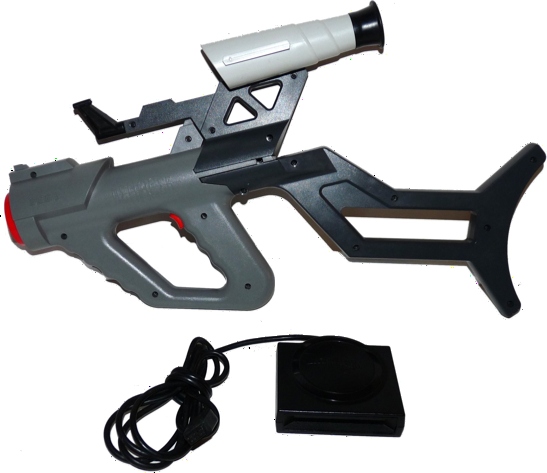 Linda, bacana, super massa, mas já falei um bocado sobre ela num outro artigo. Clique aqui para ler.
Multi Tap
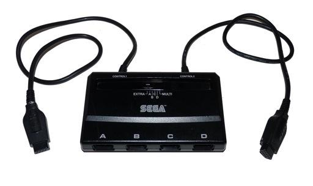 Essa coisinha permitia que 4 pessoas jogassem ao mesmo tempo no Genesis. A primeira versão era essa aí do lado, que precisava ser conectada nas duas entradas para controles no console. Depois a Sega lançou outra versão que precisava ser conectada apenas em uma única porta, deixando a outra livre para um joystick comum (assim até 5 pessoas podiam jogar ao mesmo tempo). Alguns dos jogos compatíveis com ester negocio são: NBA JAM TE, World Cup '94, Mega Bomberman, The Lost Vikings. A maioria dos jogos de esporte da Eletronic Arts, lançados após 95, tambem eram compatíveis.
EA Sports - 4 Way Play
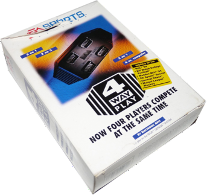É apenas um multi tap da Eletronic Arts. Tambem para 4 jogadores, funcionava da mesma forma que o da Sega, mas tinha uma carinha bem feia...
E é isso amigos. Chegamos ao fim de mais um artigo. Esses são os principais acessórios oficiais do Genesis, e que mal apareceram por aqui. Claro que ha uma infinidade de outros acessórios tão bons quantos estes ou até melhores, porem, esses outros foram fabricados por outras empresas, com ou sem autorização da Sega. Os controles da Honey Bee por exemplo, eram dos melhores disponiveis, enquanto que outros xing-ling mais irritavam que barulho de grilo no carro...
De todo modo, eram o sonho de consumo de muito moleque por aqui, e poucos puderam ter ao menos um destes.
Acesse o Trombone e comente sobre essa matéria!